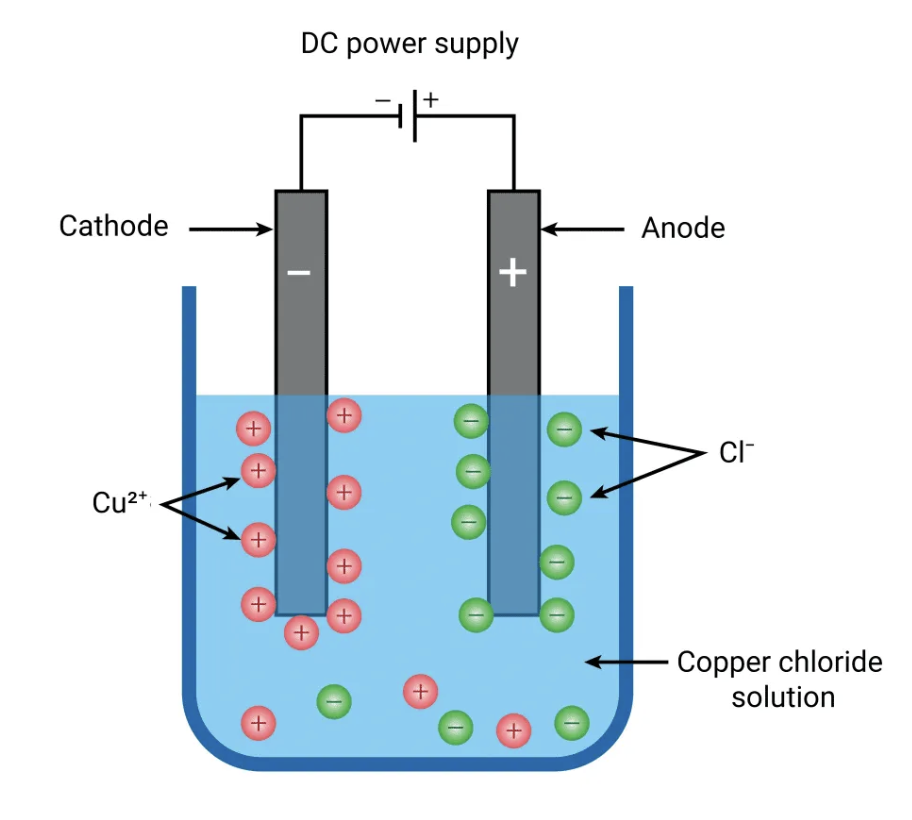
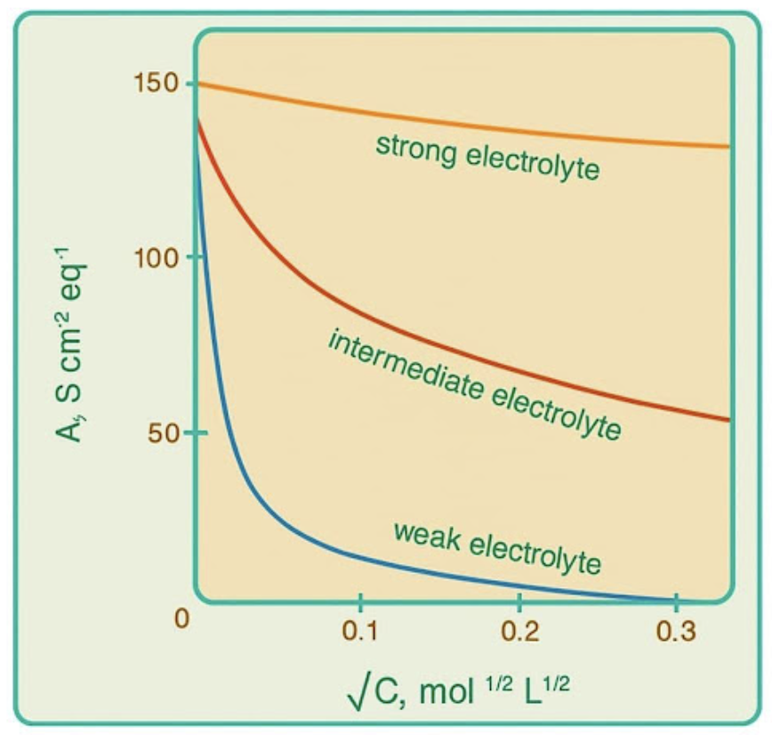
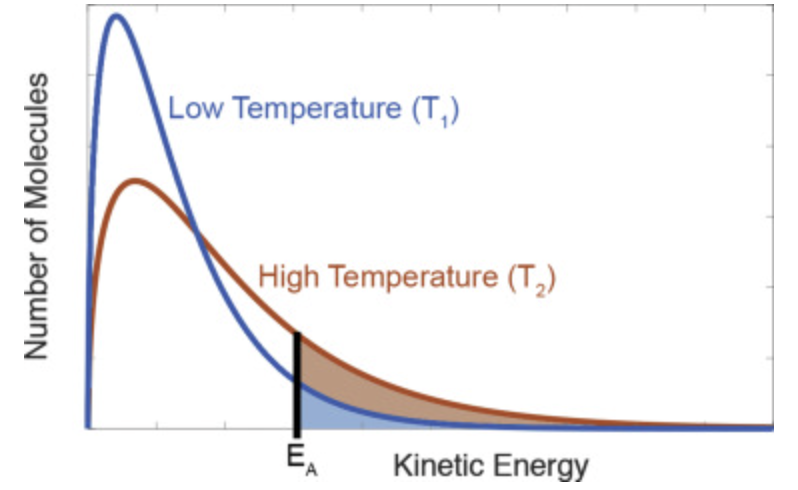

Electrochemistry and Chemical Kinetics
Exam map / pattern map
-
This combined topic is dominated by two fast clusters:
electrochemistry numericals and first-order kinetics pattern
recognition.
-
Electrochemistry PYQs repeatedly test Nernst equation,
electrolysis products, conductance/molar conductivity, Faraday
deposition, and \( \Delta G = -nFE \).
-
Kinetics PYQs repeatedly test first-order triggers: half-life
independence, straight-line plots, Arrhenius slope, pressure-time
conversion, and log-form integrated law.
-
If the question mentions half-life independent of concentration,
immediately think first order.
-
If weak electrolyte conductivity is asked, immediately connect \(
\Lambda_m = \alpha \Lambda_m^\infty \) and Ostwald-type
approximation.
Core electrochemistry formulas
-
Nernst equation at \(298\ \mathrm{K}\): \( E = E^\circ -
\dfrac{0.0591}{n}\log Q \).
- Cell free energy: \( \Delta G = -nFE \).
-
Faraday deposition relation: \( m = ZIt \), so electrochemical
equivalent \( Z = \dfrac{m}{It} \).
-
Conductivity bridge: \( \Lambda_m = \kappa \dfrac{1000}{C} \) in
\( \mathrm{cm^3} \) units, or use consistent SI form with cell
constant.
-
Resistance and conductivity: \( \kappa = (\text{cell constant})
\times \dfrac{1}{R} \).
-
Weak electrolyte: \( \Lambda_m = \alpha \Lambda_m^\infty \).
Core kinetics formulas
-
First-order integrated law: \( k = \dfrac{2.303}{t}\log
\dfrac{a}{a-x} \).
-
First-order half-life: \( t_{1/2} = \dfrac{0.693}{k} \), so it is
independent of initial concentration.
- Zero-order integrated law: \( [A]_t = [A]_0 - kt \).
- Zero-order half-life: \( t_{1/2} = \dfrac{[A]_0}{2k} \).
-
Arrhenius form in common log: \( \log k = \log A -
\dfrac{E_a}{2.303RT} \).
-
For \(\ln k\) vs \(1/T\), slope \(= -\dfrac{E_a}{R}\). For \(\log
k\) vs \(1/T\), slope \(= -\dfrac{E_a}{2.303R}\).
Fast comparison and trigger rules
-
Half-life independent of starting concentration \(\Rightarrow\)
first order.
-
\([R]\) vs time is not linear for first order,
but \(\ln [R]\) vs time is linear.
-
\(\log \dfrac{a}{a-x}\) vs time passing through origin
\(\Rightarrow\) first-order plot.
-
If gaseous decomposition changes total pressure, convert pressure
change to reacted amount before using first-order law.
-
In electrolysis with inert Pt electrodes, aqueous \(CuSO_4\) gives
Cu at cathode and \(O_2\) at anode.
-
In molten NaCl electrolysis, \(Cl_2\) is liberated at anode.
Question-to-formula mapping
-
If a cell emf and concentrations are given, write anode/cathode
first, then apply Nernst.
-
If pH is hidden inside hydrogen-electrode term, convert \( [H^+]
\) from Nernst result to pH at the end.
-
If \(\Delta G\) is asked from a cell, find \(E\) first, then use
\( \Delta G=-nFE \).
-
If mass deposited, current, and time are given, use \(
Z=\frac{m}{It} \) directly.
-
If molar conductivity at finite concentration is asked for weak
acid, find \(\alpha\) from \(K_a\), then use \(
\Lambda_m=\alpha\Lambda_m^\infty \).
-
If first-order time ratios like \(t_{1/4}\) and \(t_{1/10}\) are
asked, use log expressions; do not derive from half-life
repeatedly.
-
If rate data doubles when one reactant doubles and doubles again
when the second doubles, order is first in each, second overall.
Common traps
-
Do not subtract standard potentials directly when electron counts
differ; use \(nE^\circ\) balancing in Latimer-type combinations.
-
Do not confuse slope rules for \(\ln\) and \(\log\) Arrhenius
plots.
-
Do not assume cathode always gives hydrogen in aqueous
electrolysis; compare discharge preference.
-
Do not use first-order half-life formula for zero-order questions.
-
Do not equate \(\Lambda_m\) and \(\Lambda_m^\infty\) for weak
electrolytes at ordinary concentration.
-
Do not force every grouped-list entry into this topic; a few 2022
links drift across neighboring topics.
Solve-fast reminders
-
Nernst cell \(\Rightarrow\) write \(Q\) carefully before
substituting numbers.
-
Electrolysis product question \(\Rightarrow\) inert vs active
electrode is the first check.
-
First-order graph question \(\Rightarrow\) look for straight-line
forms first, not long algebra.
-
Pressure-based first-order gas question \(\Rightarrow\) convert to
reacted fraction, then apply log law.
-
Weak-acid conductivity question \(\Rightarrow\) \(K_a \to \alpha
\to \Lambda_m\).
-
2025
-
May 02 Shift 1, Question 143
— cell emf for Zn–hydrogen electrode used to calculate pH.
-
May 02 Shift 1, Question 144
— identify incorrect graph for reaction with
concentration-independent half-life.
-
May 02 Shift 2, Question 143
— electrolysis of aqueous copper sulphate between platinum
electrodes, identify products.
-
May 02 Shift 2, Question 144
— first-order gaseous decomposition from pressure change, find
half-life period.
-
May 03 Shift 1, Question 143
— calculate Gibbs energy change from chromium–iron galvanic
cell data.
-
May 03 Shift 1, Question 144
— Arrhenius logarithmic equation given, determine activation
energy value.
-
May 03 Shift 2, Question 143
— acetic acid molar conductivity from \(K_a\) and limiting
conductivity.
-
May 03 Shift 2, Question 144
— zero-order reaction half-life used to find
concentration-drop time.
-
May 04 Shift 1, Question 143
— molten aluminium chloride electrolysis, find aluminium mass
and chlorine volume.
-
May 04 Shift 1, Question 144
— first-order \(\ln(R)\) versus time plot, identify
y-intercept.
-
May 04 Shift 2, Question 143
— equilibrium constant of metal–silver cell used to find
\(E^\circ_{cell}\).
-
May 04 Shift 2, Question 144
— first-order reaction started with different concentration,
compare rate constant.
-
2024
-
May 09 Shift 1, Question 143
— identify correct statements from the electrochemistry
assertion set.
-
May 09 Shift 1, Question 144
— \(\ln k\) versus \(1/T\) slope given, find activation
energy.
-
May 09 Shift 2, Question 143
— formic acid dissociation percentage given, find molar
conductivity.
-
May 09 Shift 2, Question 144
— initial-rate data for \(A_2+B_2\to2AB\), infer reaction
order.
-
May 10 Shift 1, Question 143
— molar conductivity and cell constant used to find
resistance.
-
May 10 Shift 1, Question 144
— first-order decomposition, compare \(t_{1/4}\) and
\(t_{1/10}\).
-
May 10 Shift 2, Question 143
— electrolysis statements on molten NaCl and aqueous
\(CuSO_4\).
-
May 10 Shift 2, Question 144
— first-order graph slope used to calculate rate constant.
-
May 11 Shift 1, Question 143
— deposited copper mass and current given, find
electrochemical equivalent.
-
May 11 Shift 1, Question 144
— stoichiometric rate equations for \(N_2O_5\) decomposition,
relate constants.
-
2023
-
May 12 Shift 1, Question 141
— chlorine electrode potential maximum, determine chloride-ion
concentration.
-
May 12 Shift 1, Question 142
— first-order diazonium decomposition, calculate time for 90%
completion.
-
May 12 Shift 2, Question 141
— acetic acid conductivity data used to find dissociation
degree.
-
May 12 Shift 2, Question 142
— \(\ln k\) versus \(1/T\) slope given, calculate activation
energy.
-
May 13 Shift 1, Question 141
— weak monobasic acid conductivity from limiting conductivity
and dissociation.
-
May 13 Shift 1, Question 142
— reaction rate doubles on heating, determine activation
energy.
-
May 13 Shift 2, Question 141
— standard reduction potentials given, calculate \(\log K_c\)
value.
-
May 13 Shift 2, Question 142
— zero-order concentration–time graph slope used to find
\(k\).
-
May 14 Shift 1, Question 141
— decomposition rate law of HI given, determine units of
\(k\).
-
May 14 Shift 1, Question 142
— electrolysis of \(CrCl_2\), calculate chlorine volume at
anode.
-
2022
-
July 19 Shift 1, Question 144
— combine manganese reduction potentials to find \(E^\circ\)
for intermediate step.
-
July 19 Shift 1, Question 145
— reaction rate constant given, identify correct straight-line
plot.
-
July 20 Shift 1, Question 144
— choose correct acetic acid molar-conductivity versus
concentration graph.
-
July 20 Shift 1, Question 145
— compare reaction rates using catalysts with different units
of \(k\).
Electrochemical cells and emf
-
An electrochemical cell converts chemical energy into electrical
energy through a redox reaction.
-
Anode is the site of oxidation and cathode is the site of
reduction.
-
Standard cell potential is \( E^\circ_{\text{cell}} =
E^\circ_{\text{cathode}} - E^\circ_{\text{anode}} \).
-
For non-standard conditions use the Nernst equation: \( E =
E^\circ - \dfrac{0.0591}{n}\log Q \) at \(298\ \mathrm{K}\).
-
Hydrogen-electrode questions often hide pH inside \(Q\), so
convert \( [H^+] \) to pH only at the last step.
Gibbs energy and equilibrium
-
Electrical work and spontaneity are linked through: \( \Delta G =
-nFE \).
- At standard conditions: \( \Delta G^\circ = -nFE^\circ \).
-
For spontaneous cell reactions, \(E_{\text{cell}} > 0\) and
\(\Delta G < 0\).
-
This is the standard route in PYQs that go from given potentials
to Gibbs energy directly.
Electrolysis
-
Electrolysis uses electrical energy to drive a non-spontaneous
reaction.
-
For inert electrodes in aqueous \(CuSO_4\):
- cathode: \( Cu^{2+} + 2e^- \to Cu \)
- anode: water is oxidised to \(O_2\)
-
For molten NaCl with inert electrodes:
- cathode: \( Na^+ \to Na \)
- anode: \( Cl^- \to Cl_2 \)
-

Conductance and molar conductivity
- Conductance \(G = \dfrac{1}{R}\).
-
Conductivity \(\kappa\) depends on geometry-corrected conductance
through the cell constant.
-
Molar conductivity \(\Lambda_m\) is the conductance due to all
ions from one mole of electrolyte.
-
For strong electrolytes, \(\Lambda_m\) increases only slightly on
dilution.
-
For weak electrolytes, \(\Lambda_m\) increases sharply on dilution
because ionisation increases strongly.
-
For weak electrolytes: \( \Lambda_m = \alpha \Lambda_m^\infty \).
-

Faraday laws of electrolysis
- First law: deposited mass is proportional to charge passed.
- \( m = ZIt \), where \(Z\) is electrochemical equivalent.
-
Once \(m\), \(I\), and \(t\) are given, \(Z\) is usually a
one-step calculation.
-
Faraday constant \(F = 96500\ \mathrm{C\,mol^{-1}}\) is frequently
used in cell and deposition numericals.
Chemical kinetics basics
-
Chemical kinetics studies the rate of reaction and factors
affecting it.
-
Rate law expresses rate in terms of concentration: \( \text{Rate}
= k[A]^m[B]^n \).
-
Order is the sum of powers of concentration terms in the rate law.
-
Experimental rate data are used to infer order by observing how
rate changes when concentrations change.
Zero and first order reactions
-
Zero order:
- \([A]_t = [A]_0 - kt\)
- \(t_{1/2} = \dfrac{[A]_0}{2k}\)
-
First order:
- \(k = \dfrac{2.303}{t}\log\dfrac{a}{a-x}\)
- \(t_{1/2} = \dfrac{0.693}{k}\)
-
Key diagnostic: first-order half-life does not depend on initial
concentration.
-
First-order straight-line plots include \(\ln [A]\) vs \(t\),
\(\log [A]\) vs \(t\), and \(\log \dfrac{a}{a-x}\) vs \(t\).
Pressure and graph based kinetics
-
For gaseous first-order decompositions, total pressure can be used
to infer reacted amount.
-
Graph-based PYQs often test whether a straight line is expected,
and how slope relates to \(k\).
-
For \(\log \dfrac{a}{a-x}\) vs \(t\), slope \(=
\dfrac{k}{2.303}\).
- For \(\ln k\) vs \(1/T\), slope \(= -\dfrac{E_a}{R}\).
Arrhenius equation and activation energy
- Arrhenius equation: \( k = A e^{-E_a/RT} \).
-
Common-log form: \( \log k = \log A - \dfrac{E_a}{2.303RT} \).
- From a straight-line Arrhenius plot, slope gives \(E_a\).
-
Be careful whether the graph uses \(\ln\) or \(\log\), because the
denominator changes from \(R\) to \(2.303R\).
-

Useful exam distinctions
-
Electrochemistry questions here often reward clean formula
selection more than long derivation.
-
Kinetics questions here often reduce to spotting the correct order
or the correct graph.
-
Latimer-style potential combinations require electron balancing
through \(nE^\circ\), not plain subtraction.
-
Weak-electrolyte conductivity and first-order graph/slope
questions are recurring high-ROI patterns in this topic cluster.